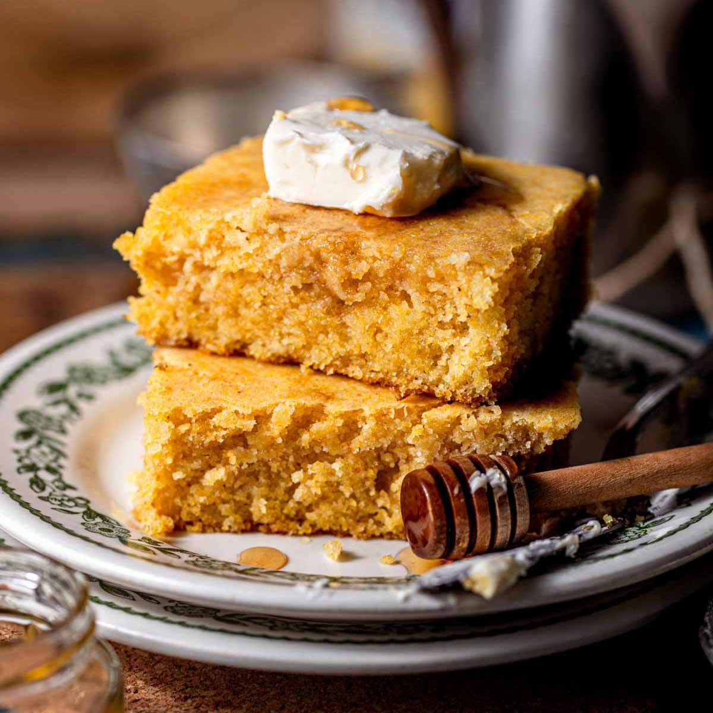
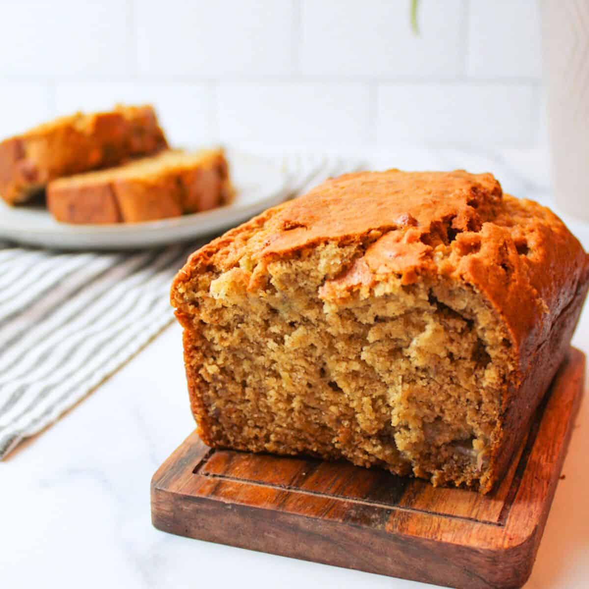
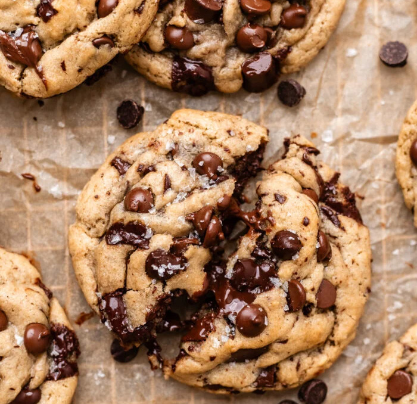

Allergy-Free Desserts Cookbook
Eggless Cornbread
Cook Time: 20 minutes
Yields: 10
Rating:
Writer:
Emily,
Thank You Very Much

Ingredients
-
1 ¼ cup
unsweetened oat milk or
soy milk,
300g – or use your milk of choice
-
1 tbsp
white vinegar or
apple cider vinegar,
14g
-
1 cup
yellow cornmeal,
140g
-
1 ¼ cup
all-purpose flour,
150g
-
⅓ cup
granulated cane sugar,
65g
-
2 tsp
baking powder,
7g
-
½ tsp
baking soda,
2g
-
½ tsp
salt,
3g
-
½ cup
melted salted vegan butter,
115g – or canola oil (add ¼ tsp salt if using oil)
Instructions
-
Preheat the oven to 400°F (200°C). Prepare a 9-inch cast-iron
skillet, a 9” round cake pan, or 8×8” baking dish by greasing
the bottoms and sides with cooking spray or melted vegan butter.
Set aside.
-
Make the dairy free buttermilk by combining the oat or soy milk
with the vinegar in a measuring cup. Mix and set aside for 5
minutes to curdle.
1 ¼ cup unsweetened oat milk or soy milk,1 tbsp white
vinegar or apple cider vinegar
-
In a medium mixing bowl, add cornmeal, flour, sugar,
baking powder, baking soda, and salt; whisk to combine well.
1 cup yellow cornmeal,1 ¼ cup all-purpose flour,⅓ cup
granulated cane sugar,2 tsp baking powder,½ tsp baking
soda,½ tsp salt
-
Make a well in the center and add the melted vegan butter and
the buttermilk mixture. Whisk well, for 1-2 minutes,
to form a batter.
TIP:
the batter may look thin at first but after whisking it should
thicken up and look like the batter in the photos in the post
above.
½ cup melted salted vegan butter
-
Pour into the prepared cast iron pan or baking dish.
-
Bake for 20-22 minutes for the cast iron pan or 22-25 minutes
for the square baking dish. A toothpick inserted in the center
should come out clean with a few crumbs.
TIP:
let the cornbread cool before slicing. It will be a bit crumbly
when hot, but once cooled the slices should hold together
beautifully.
Eggless Banana Bread
Cook Time: 1 hr 20 minutes
Yields: 12
Rating:
Writer:
Bread Dad

Ingredients
-
3 Mashed Bananas (ripe & large sized) –
345 grams – Use 1 1/2 cups of mashed bananas to be exact
-
8 Tablespoons Unsalted Butter (softened) –
115 grams You can replace the butter with 1/2 cup of a
neutral flavored vegetable oil
if you want to make a dairy-free banana bread.
-
1/2 Cup Applesauce (unsweetened & plain) –
115 milliliters
-
1 Cup White Granulated Sugar –
200 grams
-
2 Cups All Purpose Flour –
240 grams
-
1 Teaspoon Vanilla Extract –
5 milliliters
-
1 Teaspoon Baking Soda –
5 grams
-
1 Teaspoon Baking Powder –
4 grams
-
1/2 Teaspoon Salt –
3 grams
Instructions
-
Preheat oven to 325 degrees F (163 C).
-
Mash bananas with a fork.
-
Soften the butter in a microwave.
FYI – I like to use half melted butter because it is
easier to mix into the batter.
-
Stir bananas, applesauce, butter and sugar together until fully
mixed.
FYI – If you are out of butter or prefer not to use butter,
you can use vegetable oil (instead of butter).
-
Mix in remaining ingredients. Stir until the batter is
fully mixed.
-
Pour finished batter into a nonstick bread pan.
Smooth out the top of the batter within the bread pan.
-
Bake in the oven for 65-70 minutes at 325 F (163 C).
-
Take out of oven and let the banana bread cool down in the bread
pan for 10 minutes. Do not remove the banana bread from the
bread pan during this 10 minute cool down period. Use oven mitts
as the bread pan will be very hot coming out of the oven.
-
After 10 minutes, remove the banana bread from the bread pan.
Place the banana bread on a cooling rack in order to completely
cool. This cool down may take 1-2 hours. Gently slide a silicon
spatula between the banana bread and the bread pan walls if the
banana bread is stuck in the pan.
Chewy & Soft Vegan Chocolate Chip Cookies
Cook Time: 10 minutes
Yields: 18
Rating:
Writer:
Britt Berlin,
The Banana Diaries

Ingredients
-
2 ¼ cups (280 g) all purpose flour or gluten free 1:1 baking
flour , sifted and spoon & leveled*
-
1 tbsp cornstarch or arrowroot starch
-
1/2 tsp baking soda
-
1/4 tsp sea salt
-
2/3 cup (150 g) salted vegan butter,
melted and cooled to
room temperature
-
2/3 cup (135 g) light brown sugar
-
1/2 cup (100 g) organic granulated sugar
-
1/3 cup (85 g) dairy free yogurt or unsweetened applesauce,
room temperature
-
1 tbsp vanilla extract
-
1 cup (170 g) vegan chocolate chips*
(semi-sweet or your choice!)
Instructions
-
Prep:
Line a cookie sheet with parchment paper, and measure out
all ingredients.
-
Whisk: In a medium bowl, whisk together the flour,
cornstarch baking soda, and sea salt. Set aside.
-
Make the dough:
In a large bowl, whisk together the vegan
butter, sugar, brown sugar, dairy free yogurt, and vanilla.
Then add in the flour, baking soda, and sea salt. Use a rubber
spatula to fold together. Stop just before all of the flour
is mixed in.
-
Add in the chocolate chips:
Fold in chocolate chips until evenly distributed.
-
Chill:
Chill the dough for at least 30 minutes, but preferably 2
hours. The longer, the better, as the flavor will develop even
more. When the dough is nearly done chilling, preheat the oven
to 350F.
-
Bake:
Using a cookie scoop, and roll about 1.5 tablespoons of
dough per cookie for regular sized cookies, or 3 tablespoons of
dough for large cookies onto the sheet. Place into oven and bake
for 10-12 minutes (my oven, I bake them exactly 11 minutes each
time for large cookies) or until the edges are lightly golden
and are “set.” The middles shouldn’t be dough-y looking, but if
they’re still soft, that’s perfectly fine.
-
Cool:
Remove from the oven and let cool for 10 minutes.
This allows the cookies to firm up to hold together.
-
Enjoy:
Sprinkle with extra sea salt and enjoy! Store these
cookies at room temperature in an airtight container for up to
4 days, a week in the fridge, or a month in the freezer.